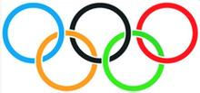
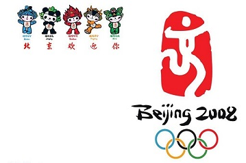
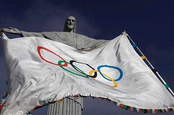

奥林匹克运动会是在奥林匹克主义指导下，以体育运动和四年一度的奥林匹克庆典——奥运会为主要活动内容，促进人的生理、心理和社会道德全面发展，沟通各国人民之间的相互了解，在全世界普及奥林匹克主义，维护世界和平的国际社会运动。奥林匹克运动包括以奥林匹克主义为核心的思想体系，以国际奥委会、国际单项体育联合会和各国奥委会为骨干的组织体系和以奥运会为周期的活动体系。
1894年06月23日，当被尊称为“奥林匹克之父”的法国教育家皮埃尔·德·顾拜旦与12个国家的79名代表决定成立国际奥委会、开创奥林匹克运动时，这一壮举曾一度成为人们讽刺的对象。而在百年之后的今天，奥运会已成为普天同庆的节日，奥林匹克运动也吸引了202个国家和地区的积极参与。
奥林匹克运动会有一系列独特而鲜明的象征性标志，如奥林匹克标志、格言、奥运会会旗、会歌、会徽、奖牌、吉祥物等，这些标志有着丰富的文化含义，形象地体现了奥林匹克理想的价值取向和文化内涵。
奥林匹克五环标志，它由5个奥林匹克环套接组成，有蓝、黑、红、黄、绿5种颜色。五环的含义是象征五大洲的团结以及全世界的运动员以公正、坦率的比赛和友好的精神在奥林匹克运动会上相见。
奥林匹克精神集中体现在奥林匹克运动一贯遵循的宗旨及提出的格言和口号上。"和平、友谊、进步"是奥林匹克宗旨的高度概括。"更快、更高、更强"是奥林匹克格言。"重要的是参与，不是胜利"这句口号，反映了奥林匹克运动的国际性和广泛的群众性。
第29届夏季奥林匹克运动会，又称2008年北京奥运会，2008年8月8日晚上8时整在中华人民共和国首都北京举办
2008年北京奥运会共创造43项新世界纪录及132项新奥运纪录，共有87个国家和地区在赛事中取得奖牌，中国以51枚金牌居金牌榜首名，是奥运历史上首个登上金牌榜首的亚洲国家。
今年8月5日至8月21日，第三十一届夏季奥运会在巴西里约热内卢举行
